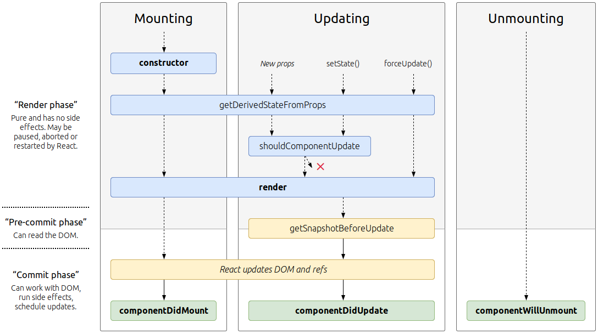

React

React ist eine moderne und quelloffene JavaScript-Bibliothek zur Erstellung von Benutzeroberflächen auf der Basis von ES6. Ursprünglich wurde react von einem Software-Ingenieur bei Facebook entwickelt und wird weiterhin von Facebook (unter anderem) gewartet.
Mit React können Entwickler Webanwendungen erstellen, die Daten verwenden, welche sich im Laufe der Zeit ändern können, ohne die Seite neu zu laden. Es zielt in erster Linie auf Geschwindigkeit, Einfachheit und Skalierbarkeit ab. React verarbeitet nur Benutzeroberflächen in Anwendungen. Dies entspricht dem View im Model-View-Controller (MVC)-Muster und kann in Kombination mit anderen JavaScript-Bibliotheken oder Frameworks in MVC, wie z.B. AngularJS, verwendet werden.
Das kleinste React-Beispiel sieht wie folgt aus:
ReactDOM.render(
<h1>Hello, world!</h1>,
document.getElementById('root')
);>
Folgen Sie den docs und dem Tutorial für weitere Informationen.
Props
Props sind die Konfigurationen der Komponente, die Sie an Instanzen übergeben. Sie werden von der oben genannten Komponente empfangen und sind unveränderlich. Ausführliche Informationen finden Sie unter Components und Props.
State
Die state speichert intere Werte einer Komponente. Es handelt sich hier um eine serialisierbare Darstellung eines Zeitpunkts -
eine Momentaufnahme. Der Zustand kann innerhalb einer Komponente über setState manipuliert werden. Ausführliche Informationen finden Sie unter
State und Lifecycle.
Lifecycle
 Bildquelle, letzter Zugriff 08.04.2020.
Siehe State und Lifecycle
JSX
React-Komponenten werden normalerweise in JSX geschrieben, einer JavaScript-Erweiterungssyntax, die das Zitieren von HTML und die Verwendung der HTML-Tag-Syntax zur Darstellung von Unterkomponenten ermöglicht. Die HTML-Syntax wird in JavaScript-Aufrufe des React-Frameworks verarbeitet. Entwickler können auch in reinem JavaScript schreiben. Ein Beispiel für JSX-Code:
import React from 'react';
class App extends React.Component {
render() {
return (
<div>
<p>Header</p>
<p>Content</p>
<p>Footer</p>
</div>
);
}
}
export default App;
In diesem Workshop werden wir Functions verwenden.